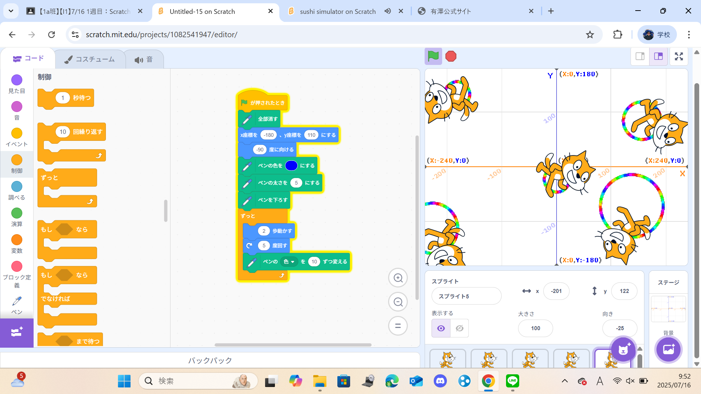
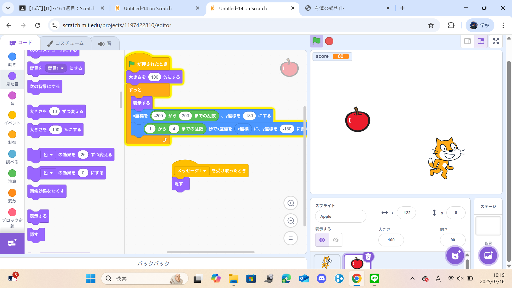

1週目のレポート ： 公大高専１年実習I-1
1a班02番 MUSUKA.BARUSU
第1週目
1-1 サイエンスアート

1.内容
スクラッチでcatを数歩進んで、数度まがるを繰り返したりして動かして、catが通ったところに、線を引き、自由な模様を作成する。
2.感想
catを利用して円を描くプログラムでは、catが進む歩数を増やせば増やすほど大きな円を描くことができることが分かった。
また、増やしすぎると画面のはじに行き、それ以上進まなくなり、円にならないときがあるので、注意が必要だった。
1-2 ゲーム

1.内容
リンゴがｙ軸が一定のランダムな場所に出てきて、
ランダムな秒数で、一定のｙ軸まで進む、そのリンゴに触れることができたら
１０ポイントがはいるプログラムを作った
2.感想
小学生のうちから、少しだけスクラッチを触っていたので、難なく課題をこなすことができた。
また、困っている学生がいたら少しだけ手伝いをすることができた。
1-3 ホームページ作成
私のホームページ
1.内容
自分でサイトを構築し、じぶんで編集し、それのリンクを知らせることによって
ファイルなどを共有することができるようにする
2.感想
物事を共有するにあたって、URLを教えるだけで、いいのはとても効率が良く、
簡単にできるので、課題の提出の方法として、良いものだと感じた
各ページへのリンク
1週目のレポート
2週目のレポート
3週目のレポート
私のホームページ